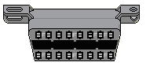
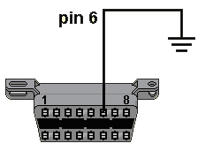

Read fault codes:
1.Locate the diagnostic socket, fig 1

2. Turn off the ignition
3. Connect pin 6 to ground according to fig 2

4. Turn on ignition
5. Watch the “check engine“ lamp and count/note the flashes. Every fault code is of two or tree flashes. A short pause between each flash and a long pause between each fault code.
6.Compare your note of fault codes with the fault code table
Erase fault codes:
It is not possible to erase fault codes manually. But when the fault is repaired Ecu will turn MIL off and erase fault code after 10-20 starts if all signals are ok.
Fault code table Opel
Fault code | Fault |
12 | Diagnos Start/Stop |
13 | O2 sensor - malfunction |
14 | Coolant temp. voltage low |
15 | Coolant temp. voltage high |
16 | Knock signal circuit 1 |
17 | Knock signal circuit 2 |
18 | Knock control module |
19 | Incorrect rpm signal |
21 | Throttle position sensor - voltage high |
22 | Throttle position sensor - voltage low |
23 | Knock control module |
24 | Speed sensor (vehicle) |
25 | Injector 1 - voltage high |
26 | Injector 2 - voltage high |
27 | Injector 3 - voltage high |
28 | Injector 4 - voltage high |
29 | Fuel pump relay voltage low |
31 | No engine rpm signal |
32 | Fuel pump relay voltage high |
33 | Inlet manifold pressure sensor (MAP) voltage low |
34 | Inlet manifold pressure sensor (MAP) voltage high |
35 | Shift valve, idle air |
37 | MIL-status light - voltage low |
38 | O2 sensor - voltage low |
39 | O2 sensor - voltage high |
41 | Speed sensor - volatage low |
42 | Feedback ignition pulses |
44 | O2 sensor - voltage low |
45 | O2 sensor - voltage high |
46 | Air pump/relay - voltage low |
47 | Air pump/relay - voltage high |
48 | Battery Voltage - voltage low |
49 | Battery Voltage - voltage high |
51 | Control unit faulty (PROM) |
52 | Check light - voltage high |
53 | Fuel pump relay - voltage low |
54 | Fuel pump relay - voltage high |
55 | Control unit faulty |
56 | Idle air control - voltage high |
57 | Idle air control - voltage low |
59 | Air flow control 1 - voltage high |
61 | Fuel tank vent. valve - voltage low |
62 | Fuel tank vent. valve - voltage high |
63 | Intake manifold valve - voltage high |
65 | Idle CO pot - voltage low |
66 | Idle CO pot - voltage high |
67 | Air flow switch |
68 | Idle switch - malfunction |
69 | Intake air temp. - voltage low |
71 | Intake air temp. - voltage high |
72 | Air flow switch - malfunction |
73 | Air flow sensor - voltage low |
74 | Air flow sensor - voltage high |
75 | Torque control - voltage low |
76 | Torque control - shift time too long |
| 79 | Control unit TRACS - malfunction |
| 81 | Injector 1 - voltage low |
| 82 | Injector 2 - voltage low |
| 83 | Injector 3 - voltage low |
| 84 | Injector 4 - voltage low |
| 85 | Injector 5 - voltage low |
| 86 | Injector 6 - voltage low |
| 87 | A/C cutoff relay voltage low |
| 88 | A/C cutoff relay voltage high |
| 89 | Pre heater - voltage low |
| 91 | Pre heater - voltage high |
| 92 | Hall sensor - signal faulty |
| 93 | Hall sensor - voltage low |
| 94 | Hall sensor - voltage high |
| 95 | Coold start valve - volatge low |
| 96 | Coold start valve - volatge high |
| 97 | Ign/Inj cut off signal - voltage high |
| 98 | O2 sensor - voltage low |
| 113 | Turbo control - overboost to high |
| 114 | Boost idle - abow limit |
| 115 | Boost full load - below limit |
| 116 | Boost - abow limit |
| 117 | “Wastegate“ valve - voltage low |
| 118 | “Wastegate“ valve - voltage high |
| 119 | MAP sensor - range / performance |
| 121 | 02 sensor - lean |
| 122 | 02 sensor - rich |
| 123 | Air flow control 1 - blocked |
| 124 | Air flow control 2 - blocked |
| 125 | MAP - below limit |
| 126 | MAP - abow limit |
| 129 | EGR - voltage low |
| 131 | EGR - voltage high |
| 132 | EGR - signal faulty |
| 133 | EGR-system 2 -voltage low |
| 133 | Air flow control 2 - voltage low |
| 134 | EGR-system 2 - voltage high |
| 134 | Air flow control 2 - voltage high |
| 135 | Check light - voltage high |
| 136 | Control unit |
| 137 | Control unit - temperature high |
| 138 | MAP-sensor - voltage low |
| 139 | MAP-sensor - voltage high |
| 143 | Immobiliser - no/signal faulty |
| 144 | Immobiliser - no signal |
| 145 | Immobiliser - signal faulty |